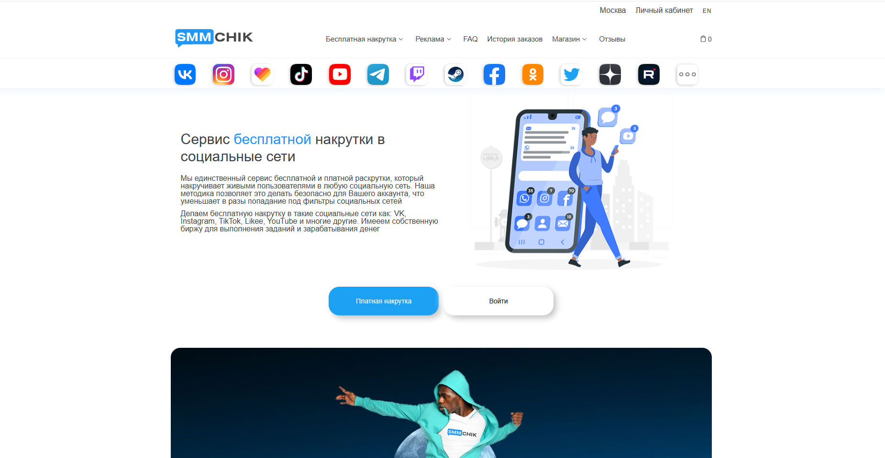

Наша редакция провела аналитическое исследование и составила рейтинг лучших сервисов накрутки лайков в Инстаграм в 2025 году, которые хорошо себя показали по отзывам и оценкам клиентов за прошедшее время. Сервисы для накрутки лайков предлагают разнообразные варианты для увеличения популярности аккаунта, привлечения реальной аудитории и увеличения вовлеченности. В этом обзоре мы рассмотрим лучшие платформы, которые предоставляют эффективные методы накрутки лайков, что поможет вам повысить рейтинг вашего контента и ускорить рост аккаунта.
Smmnakrutka
Официальный сайт: https://smmnakrutka.ru
Рейтинг сервиса: 4.7
Стоимость накрутки лайков: от 0,05 руб. до 1,50 руб.
Пробный период: нет
Что ещё можно накручивать (кроме лайков):
- подписчики
- просмотры
- комментарии
- репосты
- голоса в опросах
- реакции
- фолловеры
Описание сервиса:
Smmnakrutka — это сервис, предлагающий разнообразные инструменты для накрутки активных пользователей в популярных соцсетях, включая Instagram, Telegram и другие. Платформа гарантирует быструю доставку и качество услуг, с возможностью выбора между бесплатными и платными вариантами накрутки.
Краткая инструкция по шагам по накрутке в этом сервисе:
- Зарегистрируйтесь на сайте или войдите в свой аккаунт.
- Пополните баланс через удобную платежную систему.
- Выберите нужную услугу, например, накрутка лайков.
- Укажите ссылку на ваш аккаунт или публикацию.
- Настройте параметры заказа, такие как количество лайков.
- Нажмите «Заказать» и следите за выполнением заказа в личном кабинете.
Особенности и преимущества:
- Доступность как бесплатных, так и платных услуг для накрутки.
- Быстрая доставка с гарантией качества.
- Большой выбор социальных сетей для накрутки.
- Простой интерфейс и удобные способы оплаты.
- Поддержка разных форматов контента для продвижения.
Недостатки:
- Некоторые пользователи отмечают задержки в периоды высокой загрузки.
- Не всегда доступна поддержка в реальном времени.
CheatBot
Официальный сайт: https://cheatbot.ru
Рейтинг сервиса: 4.8
Стоимость накрутки лайков: от 0,05 руб. до 1,10 руб.
Пробный период: есть
Что ещё можно накручивать (кроме лайков):
- подписчики
- просмотры
- комментарии
- репосты
- голоса в опросах
- реакции
- бусты
Описание сервиса:
CheatBot — это удобный сервис для накрутки лайков и других показателей в популярных соцсетях. С помощью платформы пользователи могут легко увеличить активность на своих страницах и получить реальную аудиторию. Сервис предлагает быстрые и качественные услуги с возможностью выбора различных тарифов. Здесь также доступны бесплатные и платные пакеты для более эффективного продвижения.
Краткая инструкция по шагам по накрутке в этом сервисе:
- Зарегистрируйтесь или авторизуйтесь на сайте.
- Пополните баланс с помощью удобного способа оплаты.
- Выберите услугу для накрутки, например, лайки или подписчики.
- Укажите ссылку на ваш аккаунт или пост.
- Настройте параметры накрутки, например, количество лайков.
- Нажмите «Заказать» и отслеживайте выполнение задания.
Особенности и преимущества:
- Широкий выбор услуг для популярных соцсетей.
- Быстрая доставка и надежные алгоритмы накрутки.
- Возможность накрутить лайки и подписчиков с высокой активностью.
- Пробный период для тестирования услуг.
- Поддержка различных тарифов для разных нужд.
- Автоматические обновления и гарантия безопасности.
Недостатки:
- Некоторые пользователи сообщают о задержках в период высокой загрузки.
Doctorsmm
Официальный сайт: https://doctorsmm.com
Рейтинг сервиса: 4.7
Стоимость накрутки лайков: от 0,05 руб. до 1,10 руб.
Пробный период: есть
Что ещё можно накручивать (кроме лайков):
- просмотры
- комментарии
- подписчики
- репосты
- голоса в опросах
- реакции
- фолловеры
Описание сервиса:
Doctorsmm — это сервис, который помогает пользователям накрутить лайки, просмотры, подписчиков и другие метрики для аккаунтов в популярных соцсетях. Сервис предоставляет автоматическую накрутку и обеспечивает быструю доставку с гарантией качества. Он популярен среди владельцев аккаунтов, которые ищут эффективные способы продвижения и увеличения активности в социальных сетях.
Краткая инструкция по шагам по накрутке в этом сервисе:
- Зарегистрируйтесь или войдите в свой аккаунт на сайте.
- Пополните баланс с помощью доступных платёжных систем.
- Выберите услугу, например, накрутка лайков для Instagram.
- Укажите ссылку на нужный пост или аккаунт.
- Настройте параметры заказа, такие как количество лайков.
- Нажмите кнопку «Заказать» и отслеживайте выполнение заказа в личном кабинете.
Особенности и преимущества:
- Большой выбор соцсетей для накрутки, включая Instagram и другие популярные платформы.
- Быстрая и качественная доставка лайков и других метрик.
- Автоматические алгоритмы, которые обеспечивают безопасность и высокую эффективность продвижения.
- Поддержка различных типов накрутки, включая лайки, комментарии и подписки.
- Возможность тестирования сервиса на бесплатной основе.
Недостатки:
- Возможны задержки в доставке во время высокой активности пользователей.
- Некоторые риски, связанные с использованием ботов для накрутки.
Likedrom
Официальный сайт: https://likedrom.com
Рейтинг сервиса: 4.7
Стоимость накрутки лайков: от 0,05 руб. до 1,50 руб.
Пробный период: есть
Что ещё можно накручивать (кроме лайков):
- подписчики
- комментарии
- просмотры
- репосты
- реакции
- истории
- фолловеры
Описание сервиса:
Likedrom — это удобный сервис для накрутки лайков, подписчиков и других активностей в популярных соцсетях, таких как Instagram и других приложениях. Он предоставляет пользователям качественные и быстрые услуги для продвижения их аккаунтов, предлагая как бесплатные, так и платные опции. Сервис поддерживает автоматическое продвижение аккаунтов и гарантирует безопасность.
Краткая инструкция по шагам по накрутке в этом сервисе:
- Зарегистрируйтесь на сайте или авторизуйтесь, если уже есть аккаунт.
- Пополните баланс с помощью удобного метода оплаты.
- Выберите услугу, например, накрутку лайков для Instagram.
- Укажите ссылку на ваш профиль или пост, для которого нужно накрутить лайки.
- Настройте параметры заказа, например, количество лайков.
- Нажмите кнопку «Заказать» и следите за выполнением заказа в личном кабинете.
Особенности и преимущества:
- Гарантия безопасности аккаунтов и конфиденциальности.
- Удобный интерфейс и простая настройка заказов.
- Поддержка различных соцсетей и приложений.
- Автоматическое продвижение и настройка активных лайков.
- Предоставление отчетов и статистики по выполнению заказов.
Недостатки:
- Некоторые пользователи сообщают о задержках в доставке лайков в часы пик.
- Для бесплатных услуг может быть ограничен выбор опций.
Martinismm
Официальный сайт: https://martinismm.com
Рейтинг сервиса: 4.8
Стоимость накрутки лайков: от 0,03 руб. до 1,10 руб.
Пробный период: есть
Что ещё можно накручивать (кроме лайков):
- просмотры
- фолловеры
- комментарии
- репосты
- голоса в опросах
- реакции
- подписки
Описание сервиса:
Martinismm — это один из популярных сервисов, предлагающих быстрые и качественные способы накрутки лайков и других активностей в соцсетях. Платформа ориентирована на пользователей, которые хотят ускорить продвижение аккаунтов и контента, увеличив активность в популярных соцсетях, таких как Instagram. Сервис предоставляет гарантии безопасности и надежности, а также поддержку в случае возникновения вопросов. Martinismm предлагает как бесплатные, так и платные пакеты услуг, позволяя подобрать оптимальные решения для каждого клиента.
Краткая инструкция по шагам по накрутке в этом сервисе:
- Зарегистрируйтесь на сайте или войдите в свой аккаунт.
- Пополните баланс с помощью удобного способа оплаты.
- Выберите нужную услугу, например, накрутку лайков или подписчиков.
- Укажите ссылку на ваш профиль или пост.
- Настройте параметры накрутки, такие как количество лайков или подписчиков.
- Нажмите «Заказать» и следите за выполнением через личный кабинет.
Особенности и преимущества:
- Гарантированное качество накрутки с использованием безопасных методов.
- Широкий выбор дополнительных услуг для продвижения аккаунтов и контента.
- Возможность бесплатного тестирования услуг для новых пользователей.
- Автоматическая доставка заказанных услуг в течение короткого времени.
- Интуитивно понятный интерфейс и поддержка различных платежных систем.
Недостатки:
- Некоторые пользователи сообщают о небольших задержках в доставке услуг в периоды высокой нагрузки.
PRMotion
Официальный сайт: https://prmotion.me
Рейтинг сервиса: 4.7
Стоимость накрутки лайков: от 0,05 руб. до 1,10 руб.
Пробный период: есть
Что ещё можно накручивать (кроме лайков):
- просмотры
- лайки
- подписчики
- комментарии
- репосты
- фолловеры
- просмотры сторис
Описание сервиса:
PRMotion — это сервис для накрутки лайков, просмотров и фолловеров в Instagram и других популярных соцсетях. С помощью этого сервиса пользователи могут быстро и безопасно увеличить активность на своих аккаунтах. Платформа предлагает качественные и доступные инструменты для продвижения контента и привлечения активных пользователей.
Краткая инструкция по шагам по накрутке в этом сервисе:
- Зарегистрируйтесь на сайте PRMotion.
- Пополните баланс с помощью удобного способа оплаты.
- Выберите нужную услугу для накрутки лайков, фолловеров или других параметров.
- Укажите ссылку на ваш аккаунт и параметры накрутки.
- Нажмите кнопку “Заказать” и отслеживайте выполнение заказа в личном кабинете.
Особенности и преимущества:
- Простота в использовании и доступность услуг.
- Быстрая доставка и высокая безопасность накрутки.
- Широкий выбор социальных сетей для накрутки.
- Гарантия выполнения заказов в срок.
- Поддержка всех популярных соцсетей, включая Instagram, Telegram и другие.
Недостатки:
- Иногда встречаются небольшие задержки в накрутке при большом потоке заказов.
SMM.Media
Официальный сайт: https://smm.media
Рейтинг сервиса: 4.8
Стоимость накрутки лайков: от 0,05 руб. до 1,00 руб.
Пробный период: нет
Что ещё можно накручивать (кроме лайков):
- подписчики
- комментарии
- просмотры
- репосты
- реакции
- голоса в опросах
- фолловеры
Описание сервиса:
SMM.Media — это один из популярных сервисов для накрутки лайков и подписчиков в Instagram и других соцсетях. Сервис позволяет быстро увеличить популярность аккаунтов с помощью автоматического продвижения, обеспечивая качественные результаты без блокировок. С помощью SMM.Media пользователи могут накручивать лайки, просмотры, подписчиков и другие активности для своего контента в социальных сетях.
Краткая инструкция по шагам по накрутке в этом сервисе:
- Зарегистрируйтесь на сайте SMM.Media.
- Пополните баланс с помощью одного из удобных методов оплаты.
- Выберите нужную услугу, например, накрутка лайков для Instagram.
- Укажите ссылку на ваш пост или аккаунт для продвижения.
- Настройте параметры накрутки, такие как количество лайков.
- Нажмите «Заказать» и следите за прогрессом в личном кабинете.
Особенности и преимущества:
- Большой выбор услуг для продвижения в Instagram и других соцсетях.
- Автоматическая доставка с гарантией безопасности аккаунта.
- Интуитивно понятный интерфейс.
- Возможность накрутить лайки и фолловеров без риска блокировки.
- Быстрое выполнение заказов и доступные цены.
Недостатки:
- Отсутствие пробного периода для новых пользователей.
- Ограниченные возможности для более детализированного настроя параметров накрутки.
SMMchik
Официальный сайт: https://smmchik.ru

Рейтинг сервиса: 4.8
Стоимость накрутки лайков: от 0,05 руб. до 1,50 руб.
Пробный период: нет
Что ещё можно накручивать (кроме лайков):
- подписчиков
- просмотры
- комментарии
- репосты
- голоса в опросах
- реакции
- подписки на страницы
Описание сервиса:
SMMchik — это один из популярных сервисов для накрутки лайков, просмотров и других показателей в соцсетях. Он позволяет увеличить активность аккаунтов в Instagram, VK, Telegram и других популярных соцсетях. Сервис предлагает как платные, так и бесплатные варианты накрутки, обеспечивая быстрые и качественные результаты с гарантией безопасности. В SMMchik доступна накрутка не только лайков, но и подписчиков, комментариев, репостов и других активностей, что помогает повысить вовлеченность и популярность аккаунтов.
Краткая инструкция по шагам по накрутке в этом сервисе:
- Зарегистрируйтесь на сайте или авторизуйтесь, если у вас уже есть аккаунт.
- Пополните баланс через удобные способы оплаты.
- Выберите нужную услугу, например, накрутку лайков или подписчиков.
- Укажите ссылку на ваш профиль или пост.
- Настройте параметры заказа (например, количество лайков или просмотров).
- Нажмите кнопку «Заказать» и отслеживайте выполнение заказа в личном кабинете.
Особенности и преимущества:
- Широкий выбор услуг для накрутки различных активностей в популярных соцсетях.
- Быстрая доставка и гарантии качества.
- Разнообразие тарифных планов и возможность настроить параметры накрутки.
- Поддержка различных методов оплаты, включая карты и электронные кошельки.
- Простота интерфейса и удобство использования для новичков.
Недостатки:
- Нет пробного периода для новых пользователей.
- Некоторые пользователи сообщают о задержках в доставке накрутки в периоды пиковой активности.
SMMCode
Официальный сайт: https://smmcode.shop
Рейтинг сервиса: 4.7
Стоимость накрутки лайков: от 0,05 руб. до 1,15 руб.
Пробный период: нет
Что ещё можно накручивать (кроме лайков):
- подписчики
- просмотры
- комментарии
- репосты
- голоса в опросах
- реакции
- активности на страницах
Описание сервиса:
SMMCode — это платформа для накрутки лайков, подписчиков и других активностей в популярных соцсетях. Сервис предлагает качественные услуги, обеспечивая быстрое выполнение заказов и гарантию безопасности аккаунтов. Используя SMMCode, пользователи могут эффективно увеличивать популярность своих аккаунтов в Instagram, VK и других приложениях.
Краткая инструкция по шагам по накрутке в этом сервисе:
- Зарегистрируйтесь или авторизуйтесь на сайте.
- Пополните баланс с помощью доступных методов.
- Выберите услугу для накрутки, например, лайки или подписчиков.
- Укажите ссылку на ваш профиль или пост.
- Настройте параметры заказа: количество лайков или подписчиков.
- Нажмите «Заказать» и следите за выполнением заказа в личном кабинете.
Особенности и преимущества:
- Быстрое выполнение заказов с гарантией безопасности аккаунтов.
- Удобный интерфейс и простота в использовании.
- Надежные методы продвижения с минимальными рисками для аккаунтов.
- Широкий выбор услуг для социальных сетей.
- Поддержка различных методов оплаты и доступных цен.
Недостатки:
- Отсутствие пробного периода для тестирования.
- Некоторые пользователи сообщают о небольших задержках в период пиковых заказов.
Smmlaba
Официальный сайт: https://smmlaba.com
Рейтинг сервиса: 4.9
Стоимость накрутки лайков: от 0,05 руб. до 1,10 руб.
Пробный период: нет
Что ещё можно накручивать (кроме лайков):
- просмотры
- лайки
- репосты
- подписчики
- комментарии
- фолловеры
- голоса в опросах
Описание сервиса:
Smmlaba — это надежный сервис для накрутки лайков, фолловеров и других активностей в популярных соцсетях, таких как Instagram, ВКонтакте и другие. Он предоставляет быстрые и безопасные способы продвижения аккаунтов, а также услуги по накрутке с гарантией качества. Платформа поддерживает разнообразие тарифов и доступных пакетов для эффективного роста популярности профилей.
Краткая инструкция по шагам по накрутке в этом сервисе:
- Перейдите на сайт Smmlaba и зарегистрируйтесь или авторизуйтесь.
- Пополните баланс удобным способом, доступные разные способы оплаты.
- Выберите услугу накрутки, например, лайки или подписчики.
- Укажите ссылку на ваш профиль или пост для накрутки.
- Настройте параметры (количество лайков, просмотров, подписчиков и т.д.).
- Нажмите на кнопку «Заказать» и отслеживайте выполнение заказа в личном кабинете.
Особенности и преимущества:
- Поддержка множества соцсетей для накрутки.
- Быстрая доставка с гарантией качественных результатов.
- Доступные цены на накрутку лайков и подписчиков.
- Простота в использовании и множество доступных услуг.
- Наличие различных тарифов для нужд разных пользователей.
Недостатки:
- Некоторые пользователи сообщают о небольших задержках при накрутке в периоды высокой активности.
SMMPrime
Официальный сайт: https://smmprime.com
Рейтинг сервиса: 4.8
Стоимость накрутки лайков: от 0,05 руб. до 1,00 руб.
Пробный период: нет
Что ещё можно накручивать (кроме лайков):
- подписчики
- просмотры
- комментарии
- репосты
- голоса в опросах
- реакции
- активность на сторис
Описание сервиса:
SMMPrime — это сервис для накрутки лайков, подписчиков, просмотров и других показателей в популярных соцсетях. Платформа предлагает быстрые и доступные услуги для продвижения аккаунтов в Instagram, Telegram и других приложениях. Среди достоинств сервиса — удобный интерфейс, низкие цены и надежные методы продвижения. SMMPrime позволяет накручивать лайки, подписчиков и другие активности с гарантией безопасности.
Краткая инструкция по шагам по накрутке в этом сервисе:
- Перейдите на сайт SMMPrime и зарегистрируйтесь.
- Пополните баланс удобным для вас способом.
- Выберите услугу, например, накрутка лайков в Instagram.
- Укажите ссылку на ваш аккаунт.
- Настройте параметры заказа, например, количество лайков.
- Нажмите «Заказать» и отслеживайте выполнение заказа через личный кабинет.
Особенности и преимущества:
- Широкий выбор услуг для популярных соцсетей, включая Instagram и Telegram.
- Быстрое выполнение заказов с гарантией безопасности.
- Простота в использовании и удобный интерфейс.
- Поддержка различных методов продвижения, включая лайки, подписчиков и просмотры.
- Доступные цены и возможность тестирования услуг перед покупкой.
Недостатки:
- Отсутствие пробного периода для новых пользователей.
- Некоторые пользователи отмечают небольшие задержки в период пиковой нагрузки.
Smmpush
Официальный сайт: https://smmpush.ru
Рейтинг сервиса: 4.7
Стоимость накрутки лайков: от 0,05 руб. до 1,50 руб.
Пробный период: нет
Что ещё можно накручивать (кроме лайков):
- просмотры
- лайки
- подписки
- репосты
- комментарии
- голоса в опросах
- бусты
Описание сервиса:
Smmpush — это популярный сервис для накрутки лайков, подписок, комментариев и других активностей в различных соцсетях. Сервис работает с множеством платформ, предлагая как бесплатные, так и платные пакеты услуг для быстрого и качественного продвижения аккаунтов. Он ориентирован на пользователей, которые хотят повысить популярность своих страниц и контента.
Краткая инструкция по шагам по накрутке в этом сервисе:
- Зарегистрируйтесь на сайте или авторизуйтесь, если у вас уже есть аккаунт.
- Пополните баланс удобным способом, доступно множество вариантов оплаты.
- Выберите услугу, например, накрутка лайков в Инстаграме.
- Укажите ссылку на ваш профиль или публикацию.
- Настройте параметры заказа, такие как количество лайков или подписок.
- Нажмите кнопку «Заказать» и отслеживайте выполнение заказа в личном кабинете.
Особенности и преимущества:
- Широкий выбор соцсетей для накрутки, включая Инстаграм, Вконтакте и другие платформы.
- Быстрая доставка с гарантией качества.
- Простота использования интерфейса.
- Доступные цены и гибкая система оплаты.
- Прямой доступ к статистике выполнения заказов.
- Возможность накрутки не только лайков, но и других активностей, таких как подписки и комментарии.
Недостатки:
- Некоторые пользователи жалуются на задержки в доставке во время пиковой нагрузки.
- Отсутствие пробного периода для тестирования.
SMMTouch
Официальный сайт: https://smmtouch.com
Рейтинг сервиса: 4.7
Стоимость накрутки лайков: от 0,05 руб. до 1,15 руб.
Пробный период: нет
Что ещё можно накручивать (кроме лайков):
- подписчики
- просмотры
- комментарии
- реакции
- репосты
- голоса в опросах
- активности
Описание сервиса:
SMMTouch — это один из популярных сервисов, предлагающих услуги по накрутке лайков, подписчиков и других активностей в социальных сетях. Платформа работает с основными соцсетями, включая Instagram, и предоставляет как платные, так и бесплатные варианты продвижения. Сервис гарантирует качественные результаты с быстрой доставкой, предлагая пользователям широкий выбор услуг для эффективной раскрутки аккаунтов.
Краткая инструкция по шагам по накрутке в этом сервисе:
- Перейдите на сайт и зарегистрируйтесь, если у вас нет аккаунта.
- Пополните баланс с помощью доступных методов оплаты.
- Выберите нужную услугу для накрутки (например, лайки или подписчики).
- Укажите ссылку на ваш профиль или пост для накрутки.
- Настройте параметры заказа и выберите количество активных пользователей.
- Нажмите кнопку «Заказать» и следите за выполнением заказа через личный кабинет.
Особенности и преимущества:
- Широкий выбор социальных сетей и услуг для накрутки.
- Автоматическое выполнение заказов с гарантией безопасности.
- Доступные цены и различные пакеты для разных нужд.
- Быстрая доставка и результаты без задержек.
- Высокая активность и целевая аудитория для повышения вовлеченности.
Недостатки:
- Отсутствие бесплатного пробного периода.
- Иногда наблюдаются задержки в пиковые моменты.
SMMyT
Официальный сайт: https://smmyt.ru
Рейтинг сервиса: 4.8
Стоимость накрутки лайков: от 0,05 руб. до 1,10 руб.
Пробный период: нет
Что ещё можно накручивать (кроме лайков):
- подписчики
- просмотры
- комментарии
- репосты
- реакции
- фолловеры
- голоса в опросах
Описание сервиса:
SMMyT — это надежный сервис для накрутки лайков и других активностей в популярных соцсетях. Платформа предлагает качественные и быстрые услуги для продвижения аккаунтов в Instagram и других социальных сетях. Сервис работает как с платными, так и с бесплатными опциями, предоставляя пользователям возможность ускоренной раскрутки и привлечения реальной аудитории. Все процедуры выполняются безопасно, без рисков для аккаунтов.
Краткая инструкция по шагам по накрутке в этом сервисе:
- Зарегистрируйтесь на сайте или войдите в свой аккаунт.
- Пополните баланс через доступные платежные системы.
- Выберите нужную услугу для накрутки (например, лайки, подписчики).
- Укажите ссылку на ваш профиль или пост.
- Настройте параметры заказа, выберите количество лайков или подписчиков.
- Нажмите кнопку «Заказать» и следите за выполнением в личном кабинете.
Особенности и преимущества:
- Широкий выбор доступных услуг для продвижения аккаунтов.
- Быстрая доставка и гарантии выполнения заказа.
- Поддержка разных социальных сетей, включая Instagram и ВКонтакте.
- Высокая безопасность аккаунтов при использовании сервиса.
- Гибкие тарифы и возможность выбора между бесплатными и платными услугами.
- Продвинутые методы привлечения целевой аудитории.
Недостатки:
- Отсутствие пробного периода для новых пользователей.
- Некоторые услуги могут быть дороже аналогичных на других платформах.
Часто задаваемые вопросы
Как накрутить лайки в Инстаграме?
Для того чтобы накрутить лайки в Инстаграме, можно воспользоваться проверенными сервисами. Многие платформы предлагают услуги по накрутке лайков, используя активных пользователей, что способствует росту вовлеченности. Выбирая сервис, важно ориентироваться на отзывы и репутацию, чтобы избежать блокировки аккаунта и других неприятных последствий.
Можно ли накрутить лайки бесплатно?
Да, существует возможность накрутить лайки бесплатно с помощью некоторых приложений или сайтов. Однако важно помнить, что бесплатные сервисы часто накручивают лайки с помощью ботов или неактивных пользователей, что не приносит реальной вовлеченности и может повлиять на репутацию аккаунта. Для качественного продвижения лучше выбирать платные сервисы с гарантией реальных лайков.
Какие сервисы накручивают лайки безопасно?
Для безопасной накрутки лайков рекомендуется использовать только проверенные сервисы, которые предоставляют гарантии безопасности и предлагают реальных пользователей. Такие сервисы используют алгоритмы Инстаграма для автоматического увеличения вовлеченности, при этом минимизируя риски блокировки аккаунта.
Накрутка лайков влияет на алгоритмы Инстаграма?
Да, накрутка лайков может повлиять на алгоритмы Инстаграма. Когда ваш контент получает лайки, особенно от активных пользователей, алгоритмы начинают рекомендовать его другим людям, увеличивая охват и вовлеченность. Это способствует росту вашего аккаунта и повышению популярности публикаций.
Что делать, если сервис накрутил ботов?
Если сервис накрутил ботов или неактивных пользователей, это может снизить вовлеченность и привести к санкциям со стороны Инстаграма. В таком случае рекомендуется обратиться в службу поддержки сервиса для решения проблемы или сменить платформу на более надежную, которая предоставляет только реальных пользователей.
Как выбрать качественный сервис для накрутки лайков?
Выбирая сервис для накрутки лайков, важно учитывать его репутацию, отзывы пользователей и гарантии безопасности. Хорошие сервисы предоставляют активных пользователей и обеспечивают безопасность аккаунта, минимизируя риски блокировки. Также стоит обратить внимание на стоимость услуг и наличие различных тарифов для получения качественных лайков.
Зачем накручивать лайки в Инстаграм?
Накрутка лайков помогает повысить популярность контента и увеличить вовлеченность аудитории. Когда на ваших постах много лайков, это привлекает внимание новых пользователей и способствует увеличению охвата. Кроме того, лайки помогают создать иллюзию популярности, что может привести к привлечению реальных фолловеров и улучшению видимости аккаунта в поиске.
Какие риски связаны с накруткой лайков?
Основной риск накрутки лайков заключается в возможной блокировке аккаунта. Платформы, такие как Инстаграм, активно борются с накруткой лайков и используют алгоритмы для выявления фальшивых активностей. Если сервис использует ботов или неактивных пользователей, это может привести к санкциям со стороны соцсети. Поэтому важно выбирать качественные сервисы с реальными пользователями.
Как накрутить лайки, не нарушая правила Инстаграма?
Для того чтобы накрутить лайки без нарушения правил Инстаграма, лучше использовать сервисы, которые предоставляют реальных пользователей. Такие сервисы следуют алгоритмам соцсети и предлагают лайки, которые могут повысить вовлеченность. Кроме того, важно не увлекаться накруткой и не применять ее на каждом посте, чтобы не вызвать подозрения у платформы.
Как быстро накрутить лайки в Инстаграме?
Для быстрого накручивания лайков можно воспользоваться платными сервисами с автоматическим добавлением лайков от активных пользователей. Такие сервисы предлагают быстрые и качественные результаты, что помогает ускорить процесс продвижения аккаунта. Однако важно убедиться, что выбранный сервис предоставляет только реальных пользователей для обеспечения долгосрочных результатов.